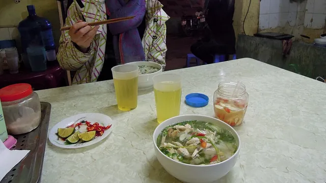Chicken Noodle Soup (Pho Ga), Tây Hồ (7069116563).jpgDavid McKelvey from Brisbane, AustraliaCC BY 2.0 · 已缩放并转换为 WebP
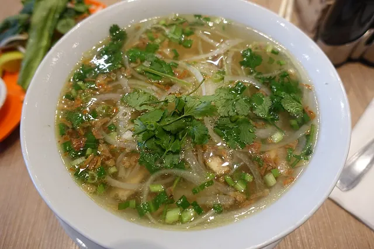Chicken Pho, Pho 21, Montparnasse, Paris 001.jpgGuilhem Vellut from Paris, FranceCC BY 2.0 · 已缩放并转换为 WebP
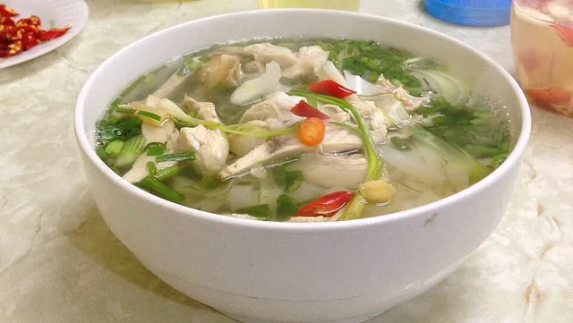Pho ga (noodle soup with chicken), Hanoi (6945821707).jpgDavid McKelvey from Brisbane, AustraliaCC BY 2.0 · 已缩放并转换为 WebP
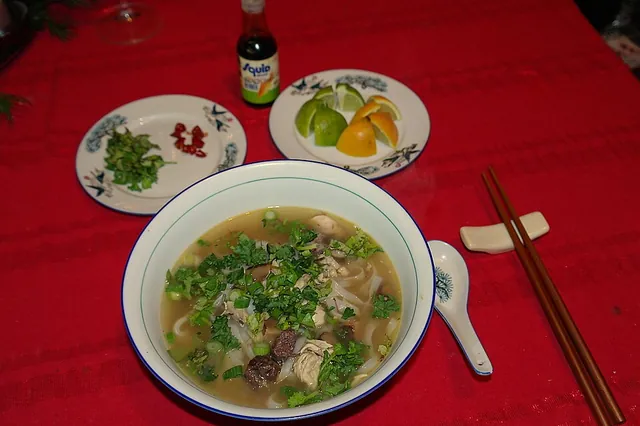Vietnamská kuřecí polévka “phở gà“ se širokými rýžovými nudlemi 01.JPGHorakvladoCC BY-SA 4.0 · 已缩放并转换为 WebP
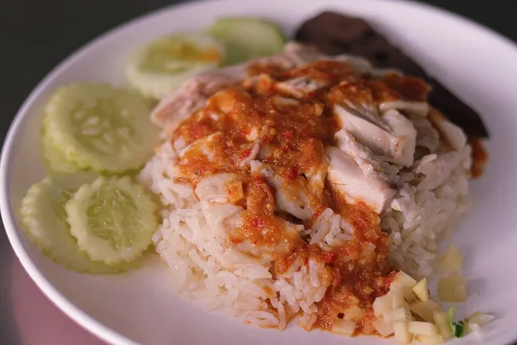(So-called?) Hainan-style Chicken Rice in Bangkok (48881306971).jpgVee Satayamas from Bangkok, ThailandCC BY 2.0 · 已缩放并转换为 WebP
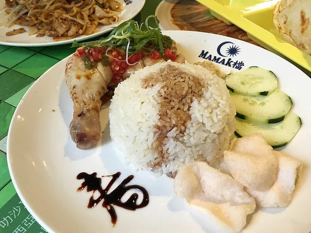Food 海南雞飯, Mamak檔, 星馬料理, 台北 (24234958253).jpgbryan... from Taipei, TaiwanCC BY-SA 2.0 · 已缩放并转换为 WebP
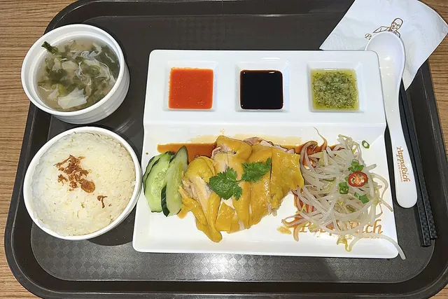Hainan Chicken Rice at Pappa Rich Malaysian Delights, GR Mall Beijing (20230716104217).jpgN509FZCC BY-SA 4.0 · 已缩放并转换为 WebP
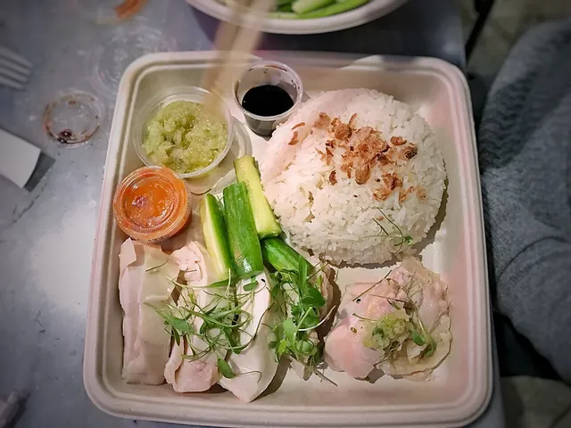Hainan Chicken, garlic rice, pickles, ginger scallion sauce, seasoned soy, chili sauce (31740963840).jpgT.TsengCC BY 2.0 · 已缩放并转换为 WebP
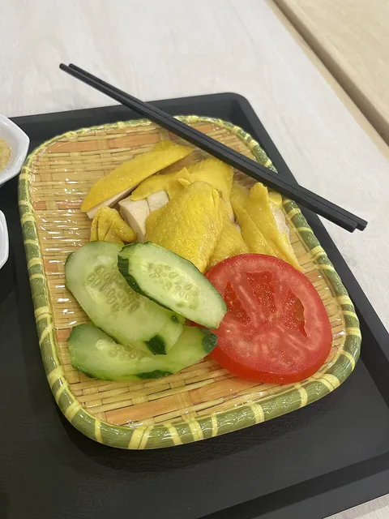Hainanese Chicken from Thai Restaurant from Public Food Court in Olympian City.jpgPeachyeung316CC BY-SA 4.0 · 已缩放并转换为 WebP
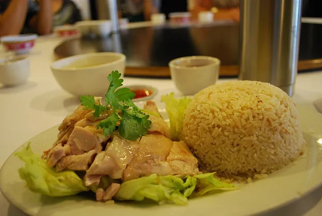Hainanese Chicken Rice - Kotaraya AUD8.90 (4449024879).jpgAlpha from Melbourne, AustraliaCC BY-SA 2.0 · 已缩放并转换为 WebP
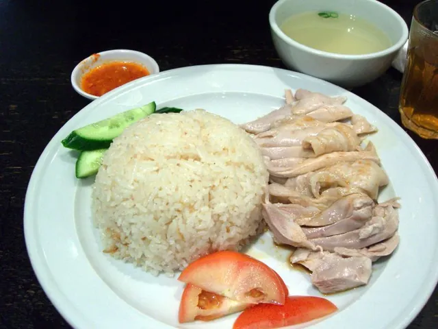Hainanese Chicken Rice - Singapore Chom Chom (256158484).jpgAlpha from Melbourne, AustraliaCC BY-SA 2.0 · 已缩放并转换为 WebP
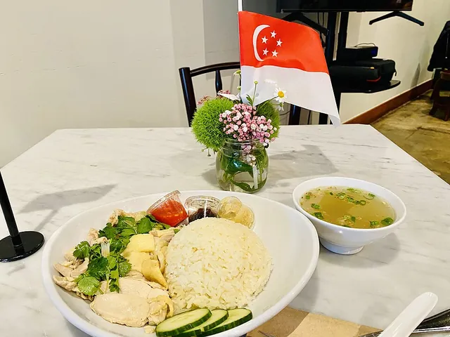Hainanese chicken rice in Killiney Kopitiam at Palo Alto, California.jpgSuiren2022CC BY-SA 4.0 · 已缩放并转换为 WebP
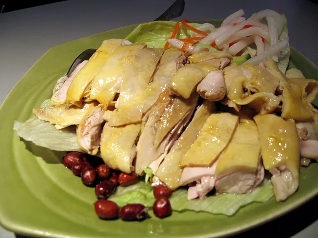Hainanese Chicken.JPGNo machine-readable author provided. Underbar dk assumed (based on copyright claims).CC BY-SA 3.0 · 已缩放并转换为 WebP
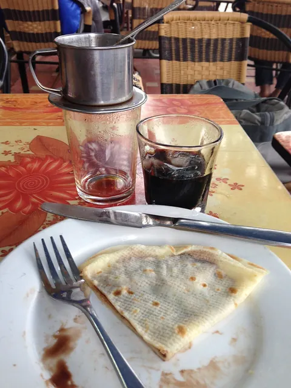Vietnamese iced coffee and a crepe, Lào Cai, Vietnam - 20131027.jpgSmuconlawCC BY-SA 4.0 · 已缩放并转换为 WebP
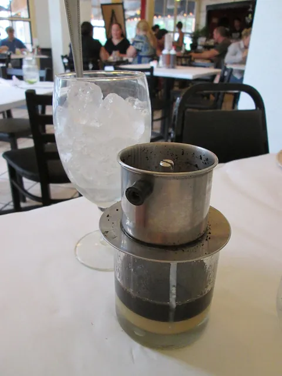Vietnamese Iced Coffee Ba Chi Canteen.jpgInfrogmation of New OrleansCC BY 2.0 · 已缩放并转换为 WebP
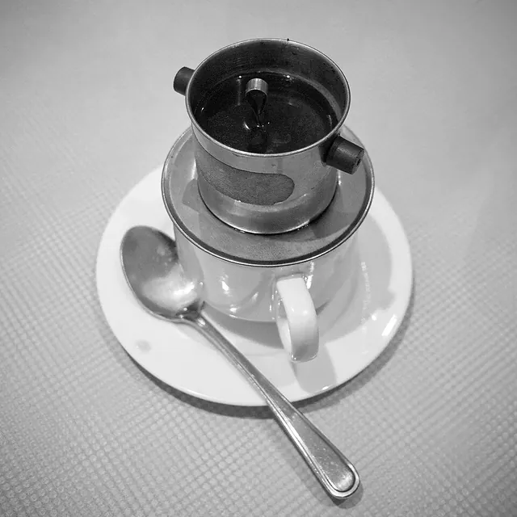An Nam, Vietnamese French Coffee (5914403283).jpgKenny Louie from Vancouver, CanadaCC BY 2.0 · 已缩放并转换为 WebP
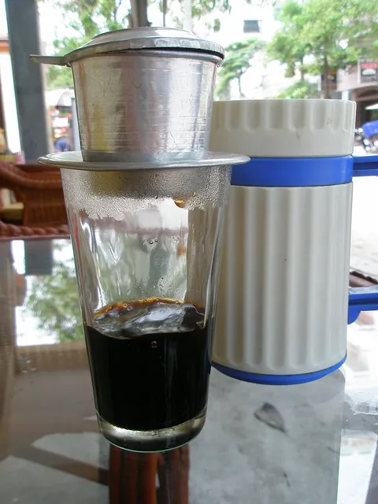Ca phe Nha Trang.jpg(in search for a new country of residence)CC BY-SA 2.0 · 已缩放并转换为 WebP
Cà phê sữa nóng ở quán Hoa sim tím tại Bình Tân.jpgPhương Huy (thảo luận)Public domain · 已缩放并转换为 WebP
HK SSP 深水埗 Sham Shui Po 元州街 133 Un Chau Street 龍鳳大廈 Lung Fung Building 越式越好味 Pho Lotus Vietnamese Cuisine Restaurant food June 2021 SS2 04.jpgMawenag Lauengia 2336CC BY-SA 4.0 · 已缩放并转换为 WebP
Iced Lemon tea with mint leaves in bakery and coffee house.jpgPeachyeung316CC BY-SA 4.0 · 已缩放并转换为 WebP
Molopper Cafe, iced tea with lemon (5057850333).jpg@felixtriller from Cologne, GermanyCC BY 2.0 · 已缩放并转换为 WebP
Crispy Tofu with Green Beans and Congee (5215984707).jpgGeoff Peters from Vancouver, BC, CanadaCC BY 2.0 · 已缩放并转换为 WebP
Stir fried Vegetable Tofu broken with rice for dinner.jpgPradeepraajkumar1981CC BY-SA 4.0 · 已缩放并转换为 WebP
Grilled tofu with steamed chard and spicy mango sauce (3252903983).jpgKaren and Brad EmersonCC BY 2.0 · 已缩放并转换为 WebP
Grilled Lemongrass Chicken Bánh Mì with Sate Sauce, Viet Sub, Vancouver, BC.jpgStoppedTimeCC0 · 已缩放并转换为 WebP
Chicken Bo Bun @ Take out @ Bahn Mi's @ Annecy (27453828377).jpgGuilhem Vellut from Annecy, FranceCC BY 2.0 · 已缩放并转换为 WebP
Vùng Cùa ở Cam Lộ th5n2023-Phương Gia Trang (tô miến gà) (1).jpgPhương HuyCC BY-SA 4.0 · 已缩放并转换为 WebP
Bun tron, Le Cambodge, 2 Rue Leriche, 75015 Paris, France 001.jpgGuilhem Vellut from Paris, FranceCC BY 2.0 · 已等比缩放并转换为 WebP